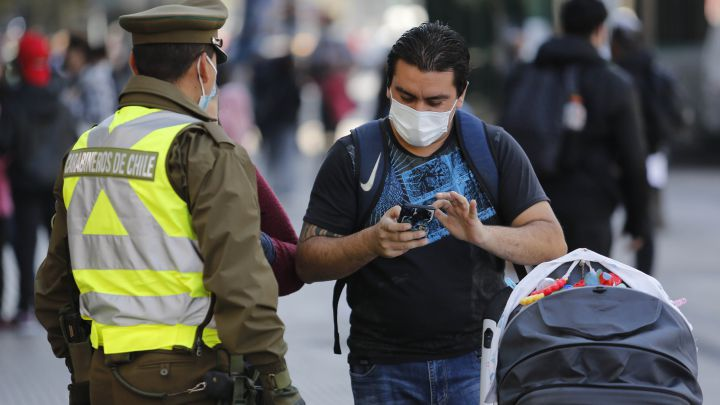

18.04.05.png)
Nuevas restricciones en pandemia: Todas las medidas que comienzan a regir el lunes 5 de abril
Durante este fin de semana, Chile ha registrado más de 8 mil casos nuevos de contagio por dos días consecutivos.
Las autoridades de Gobierno dieron a conocer nuevas medidas de restricción que comenzarán a regir este lunes 5 de abril, con el fin de frenar los contagios de COVID-19que han aumentado en estos últimos meses.
Dicho anuncio se dio justo antes que se iniciara el fin de semana largo por Semana Santa y Chile registrara, por dos jornadas consecutivas, más de 8 mil casos nuevos de contagios diarios.
Trabajadores esenciales
Se limitará el personal que se considera esencial dentro de la actividad que se encuentra autorizada, incluidos los funcionarios públicos.
En ese sentido, se definió a empleados esenciales como "aquellos trabajadores y/o prestadores de servicios de una empresa o institución pública o privada, cuyo giro ha sido declarado esencial, que desempeñen funciones que no pueden ser realizadas telemáticamente y que son imprescindibles para la actividad propia del giro, tales como labores operativas, logísticas y productivas, mantención de sistemas, seguridad, limpieza y sanitización".
"Se dejan expresamente fuera de esta definición las labores administrativas, contables, financieras y de asesorías y consultorías. Se encuentran comprendidos en esta definición los trabajadores que prestan servicios mínimos que deben asegurarse en caso de huelga"
Permiso Único Colectivo
Las empresas deberán informar el total de los trabajadores contratados o que prestan servicios además de aquellos que son considerados como esenciales para los cuales se solicita el documento.
Se debe especificar la labor del trabajador considerado como esencial y para que se solicita permiso. Por ejemplo, labores operativas, logísticas, mantención de sistemas, entre otros.